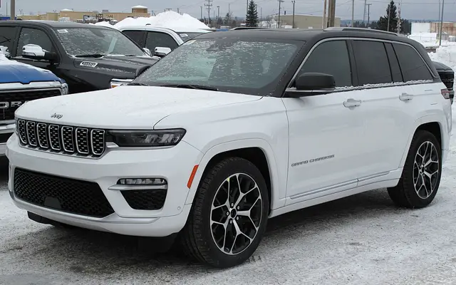

Par Motor › Precios por modelo › Jeep Grand Cherokee
Precio de segunda mano · noviembre de 2026¿Cuánto vale un Jeep Grand Cherokee de segunda mano?

Precio justo estimado de un Jeep Grand Cherokee usado en España, año por año, con los kilómetros normales para su edad y en buen estado: de 16.100 € a 78.000 €. Para tasar el tuyo con sus kilómetros reales y su estado, usa el tasador gratis.
Precios del Jeep Grand Cherokee por año
Grand Cherokee WK2 (2011–2021)
Precio de nuevo: 3.0 V6 CRD 241 CV, 55.000 € · 3.6 V6 286 CV, 55.000 € · 3.0 V6 CRD 250 CV, 60.000 €
| Año | Km normales | 3.0 V6 CRD 241 CV · Diésel | 3.6 V6 286 CV · Gasolina | 3.0 V6 CRD 250 CV · Diésel |
|---|---|---|---|---|
| 2021 | 100.000 km | 29.200 € | 32.100 € | 31.900 € |
| 2020 | 100.000 km | 28.600 € | 27.700 € | 31.300 € |
| 2019 | 100.000 km | 28.000 € | 25.700 € | 30.500 € |
| 2018 | 100.000 km | 27.200 € | 24.800 € | 29.700 € |
| 2017 | 100.000 km | 26.400 € | 23.900 € | 28.900 € |
| 2016 | 100.000 km | 24.500 € | 23.000 € | 26.700 € |
| 2015 | 100.000 km | 22.500 € | 22.000 € | 24.600 € |
| 2014 | 100.000 km | 20.700 € | 21.100 € | 22.600 € |
| 2013 | 100.000 km | 19.000 € | 19.600 € | 20.800 € |
| 2012 | 100.000 km | 17.500 € | 18.100 € | 19.100 € |
| 2011 | 100.000 km | 16.100 € | 16.600 € | 17.600 € |
Grand Cherokee WL (2022–hoy)
Precio de nuevo: 4xe (enchufable) 380 CV, 85.000 €
| Año | Km normales | 4xe (enchufable) 380 CV · Híbrido enchufable |
|---|---|---|
| 2026 | 5.000 km | 78.000 € |
| 2025 | 20.000 km | 65.000 € |
| 2024 | 35.000 km | 59.800 € |
| 2023 | 50.000 km | 55.000 € |
| 2022 | 65.000 km | 50.600 € |
Kilómetros normales: 15.000 al año en gasolina, híbridos y eléctricos, y 20.000 en diésel, con un máximo de 100.000 km (por encima no tasamos: el precio depende demasiado del historial de cada coche). Cifras redondeadas a 100 €.
Preguntas frecuentes
¿Cuánto vale un Jeep Grand Cherokee de segunda mano?
Según el año, la versión y los kilómetros, un Jeep Grand Cherokee usado vale hoy de 16.100 € a 78.000 € en España. El más barato de nuestra tabla es un 3.0 V6 CRD de 2011 (16.100 €) y el más caro un 4xe (enchufable) de 2026 (78.000 €). Son precios justos estimados entre particulares y profesionales, con los kilómetros normales para su edad y en buen estado.
¿Cuánto valor pierde un Jeep Grand Cherokee al año?
Con unos años encima, un Jeep Grand Cherokee pierde alrededor de un 8 % de su valor cada año (calculado sobre el 4xe (enchufable) de la generación Grand Cherokee WL). Los primeros años la caída es mayor y a partir de los 70.000 km se acelera.
¿Qué motorizaciones tiene el Jeep Grand Cherokee?
En nuestra base de datos hay versiones diésel, gasolina y híbrido enchufable, en 2 generaciónes: Grand Cherokee WK2 y Grand Cherokee WL.
¿Cómo sé si me piden demasiado por un Jeep Grand Cherokee?
Abre el tasador de Par Motor, elige el Jeep Grand Cherokee, el año y los kilómetros reales, y escribe lo que te piden. Te diremos si está por debajo del precio justo (chollo) o por encima (caro). Es gratis y no pide registro ni matrícula.
Otros Jeep
Compara su coste real
El precio de compra es solo una parte. Mira cuánto te costaría al mes con combustible, seguro, neumáticos, mantenimiento y lo que pierde de valor.
Abrir el comparador →